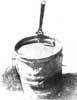
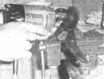

Give New Life To Abandoned Tools
Wylie W. Johnson
January/February 1979
It's almost impossible to keep the old homestead (or apartment) together without the help of a whole gang of expensive implements. But, if you pick up other people's castoff tools and give 'em a bit of tender loving care, you can equip your workshop for pennies a year, and still have some tools left over for barter.
TOOL GRAVEYARDS
All you'll need to start your collection of these discarded treasures is a good nose for the kind of "hiding places" that junk tools usually end up in. And nothing will get you into those places quicker than a willingness to help clean out other folks' attics, basements, barns and similar graveyards of abused equipment.
Not so long ago, for instance, a friend asked me to lend a hand "redding up" the garage that came with his new apartment. I did so, and was rewarded with two old axe heads and a ball-peen hammer. And, on another occasion, the bed of a newly purchased, 1956 pickup produced five pairs of shears, a hacksaw frame, a keyhole saw, two cold chisels and many other perfectly good tools that hid their glory under coats of rust and neglect. (Of course, if you don't mind spending a little cash, there are many unwanted but excellent tools to be found at garage sales and auctions.)
FROM BEAST INTO BEAUTY
It's easy enough to turn the misused instruments that you find into serviceable implements. To begin, soak your "discoveries" overnight in a five-gallon bucket of used motor oil. This oil bath serves two purposes: The oil loosens surface rust and corroded joints, and also arrests oxidation to prevent further damage.
One of the most valuable items in tool restoration is a vise, your "third hand." (If you don't have one, you can use a clamp to fasten the tool to a workbench or table.)
When the oil has done its work, use the vise and an electric drill with a three-inch wire-wheel attachment to further clean the tools. (I prefer this arrangement to a bench grinder with a wire wheel, because the work piece remains stationary and I can see when the metal is clean.) For a thorough and quick job, adjust the direction the vise faces and clamp the tool in as many different positions as necessary to get at all the blighted areas. You'll find that the rust comes off readily, but don't try to remove metal with a wire wheel, it just won't do the job.
Once you've cleaned around any nuts, bolts or other fasteners, disassemble the tool to get at hidden corrosion. Be sure to pay special attention to bearing surfaces and cutting edges, because your tool will be useful (even if it is as ugly as a squashed toad) as soon as these working surfaces are in good condition.
CAUTION: Remember to wear safety glasses when you do this restoration work. A wire wheel can throw rust or pieces of wire right in your face, and the loss of an eye is not a fair price for a secondhand tool!
GET TOUGH
Should a tool refuse to yield to the low-pressure tactics mentioned above, there are three "big guns" that can be brought in to attack the job: naval jelly, penetrating oil and heat. These should only be used as a last resort, however, since they all cost money and are usually unnecessary.
When it's needed, though, a thick coat of naval jelly will normally remove even the most stubborn rust, and penetrating oil-placed on frozen joints and screws-will help to loosen up any tool ... especially if you use a hammer judiciously to break the rust bond.
If all else fails, heat the tool with a propane torch, over a gas stove, or in a forge. (Just be careful not to burn your hands, and be aware that too much heat takes the -temper out of metal.) Once the tool is hot, tap it lightly with a hammer, and then attempt to work the offending part free. (Unfortunately, there are times when you come across a tool that can't be rescued. You'll save yourself a lot of time and frustration if you learn to recognize these "dead pieces" early in the game.)
THE FINAL TOUCHES
Once the rust is removed, all you'll have to do is to sharpen the edges, refinish the handles, and add a touch of light machine oil to the bearing surfaces.
You'll need a jig, probably, to put an edge, on a recycled saw. Snips, wire cutters, and similar devices-on the other hand-are easily sharpened with a flat file ... and a file will remove pit marks from the face of a hammer, too.
Old wooden handles should be sanded to remove any paint (the wire wheel would score the wood), and then finished with a half-and-half mixture of boiled linseed oil and turpentine. (The notoriously slow drying process of linseed oil can be speeded up somewhat if you add a teaspoon or two of cobalt siccative-available at art supply stores-to one quart of the oil and turpentine mix.) After the coating dries, sand the handles with 220 grit sandpaper, and you'll have a first-rate, beautiful finish that's good for the wood and more resistant to water than almost anything else.
And, if you find a tool (such as an axe or sledge) that needs a new handle, try to use ash or a similar hardwood with a clear, straight grain. Then just apply a finish in the manner described above.
BETTER THAN NEW
Once you've cleaned off the coating of rust, try to find the brand name of your old tool. This can be a useful bit of knowledge if you ever want to swap the implement, because quality tools just don't depreciate. If anything, they tend to become more valuable, since newer tools are often of poor quality (and will become more so as steel prices continue to skyrocket).
And, in the event that you come across a tool you don't need, keep it anyway. If a friend can't use it, you may be able to make a swap. And who knows (says the old pack rat), maybe someday you'll find a use for it!
The more of this "old junk" that you recondition, the more you'll realize that most quality tools were originally made to last at least a lifetime. I firmly intend to pass my fine, regenerated Implements along to my children ... and I expect that (if they take care of them) they can do the same.
 With a little huntin' and some tender loving care, you can have a shopful of refurbished tools. |
 The first step toward restoring your treasures is to soak them-overnightin a large |
 container of used motor oil. (A string tied to the tool's handle makes retrieval less messy.) |